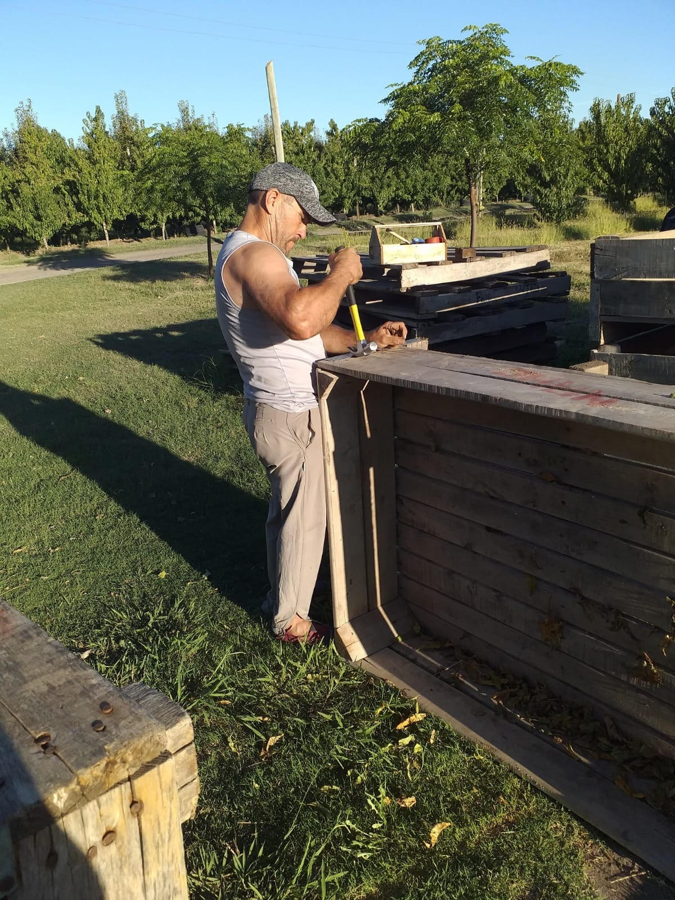
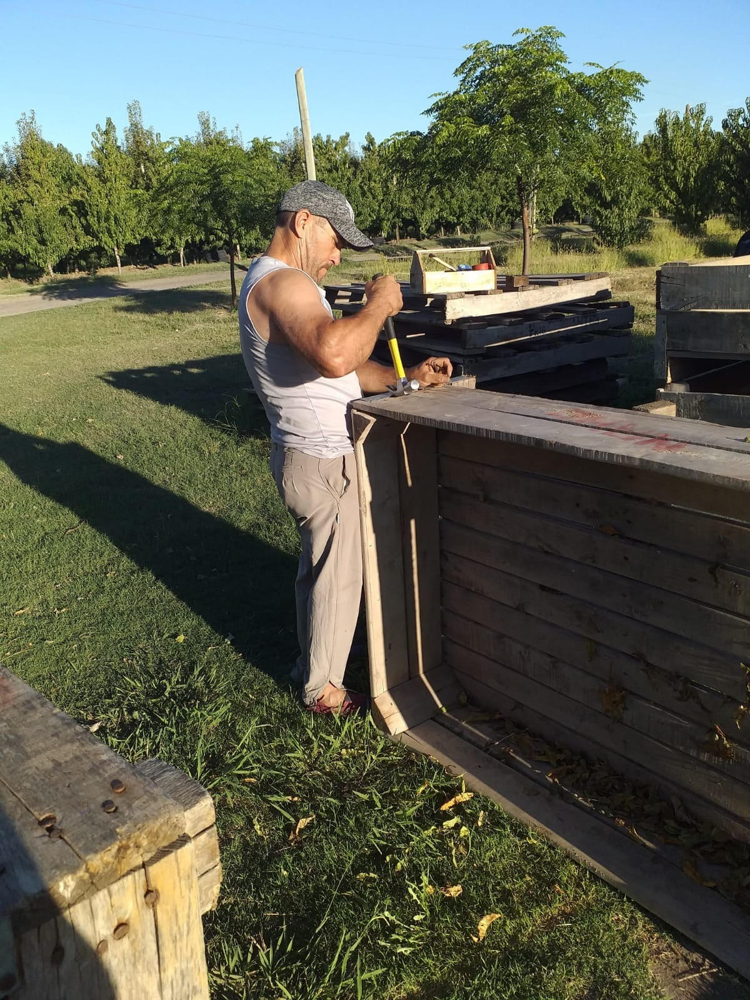

Cajones y bines
Los bines se utilizan para que los cosechadores dejen allí la fruta depositada y luego nosotros realizamos los trabajos de clasificación de la fruta, es decir, que descartamos y clasificamos una por una según su tamaño y la acomodamos en los cajones para que recién allí se importe.

 

Tinglado
Lo realizamos más que nada para poder guardar nuestras herramientas, pero también lo utilizamos en verano debido a que es época de cosechas, trabajamos aquí la fruta para resguardarla y resguardarnos del sol. Es también una exigencia de SENASA el tener en el establecimiento un tinglado habilitado con todas las condiciones necesarias para poder importar o exportar la fruta, ya que sin esto no sería posible, por ello se requiere de un baño, agua potable, lavamanos, cortinas y demás.


Tractores
Es una de las herramientas fundamentales en todos nuestros trabajos durante todo el año ya que lo utilizamos como movilidad interna de la chacra, para transportar la fruta, realizar diversas curas, rastrear la tierra, desmalezar, levantar el peso de los bines en donde se cosecha la fruta, etcétera.
Cámara
Hace pocos años compramos un pequeño termo de un camión con cámara de frío para poder refrigerar y mantener el estado de la fruta que vamos cosechando, pero tiene cabidad solo para alrededor de 300 cajones e igualmente nos queda pequeña. Al ser esto así, comenzamos a construir una cámara pero de material, con el triple de capacidad del tamaño de la antes mencionada, para más comodidad para nosotros. A las mismas las utilizamos mayormente en verano, puesto que las temperaturas en esta zona son muy elevadas y la fruta necesita frío para mayor conservación, entonces, lo que hacemos es poner a estas cámaras a una temperatura de 5 grados sobre cero, para que se mantenga el fruto fresco y dure mayor tiempo.